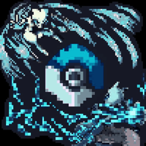

Cracked Cobblemon Server · Season 2 Arctis · Minecraft 1.21.1
COBBLEASIA
The cracked Cobblemon server for Asia: premium and non-premium accounts welcome, 40 in-house mods, one server hosted in Singapore. Season 2 is live — a Cobblemon world frozen in crystal.
Server News
What's happening
Patch Notes
Latest updates
New features, improvements and fixes — fresh from the dev team.
What's inside
Every system, custom-built
Click any feature to see exactly how it works — step by step, with the commands you'll use.
FAQ
Cracked Cobblemon server — your questions answered
Is Cobble Asia a cracked Cobblemon server?
Yes. Cobble Asia runs in offline mode, so both premium (official Minecraft) and non-premium accounts can join. On your first join you create an account with
/register <password>, then use /login <password> every time after that.What version does the server run?
Minecraft 1.21.1 on Fabric with Cobblemon 1.8.1. The CobbleAsia modpack is required to join, because Season 2 runs on a custom interface. Get it from our Discord.
Where is the server hosted?
In Singapore, for low ping across Southeast Asia and the wider Asia-Pacific region.
Is it free to play?
Yes. Cobble Asia is free to join and play. There is an optional store that supports the server.
What makes it different from other Cobblemon servers?
Almost every system is built in-house: gyms and an Elite Four ladder, the Battle Tower, raid bosses, dungeons, Area Zero, Safari, rebuilt breeding, Pokémon fishing, the player Bazaar, ranked PvP and seasonal gear. Browse every feature to see how each one works.
How do I join?
Install the CobbleAsia modpack, launch Minecraft 1.21.1 (Fabric) and add the server
play.cobbleasia.net. The tutorial walks you through your first join step by step.Ready to play?
Cobblemon 1.21.1 · Fabric. The CobbleAsia modpack is required — Season 2 runs on a custom interface, so grab the pack from Discord first, then connect:
IP
play.cobbleasia.net